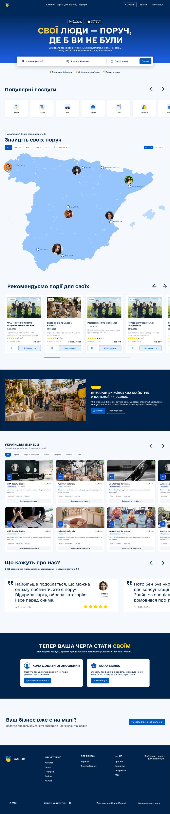
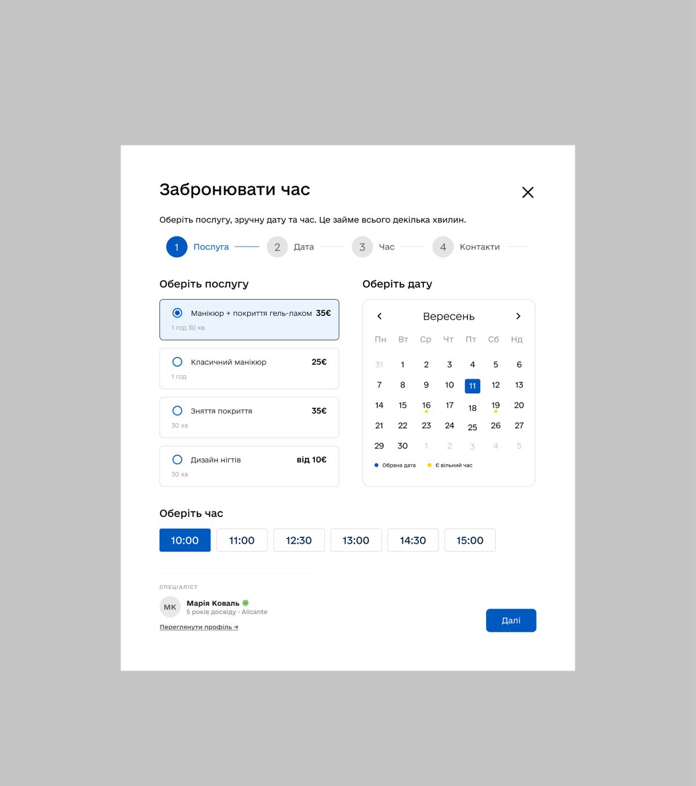
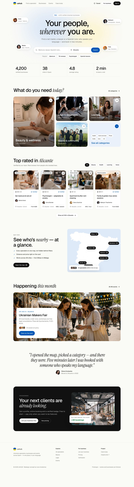
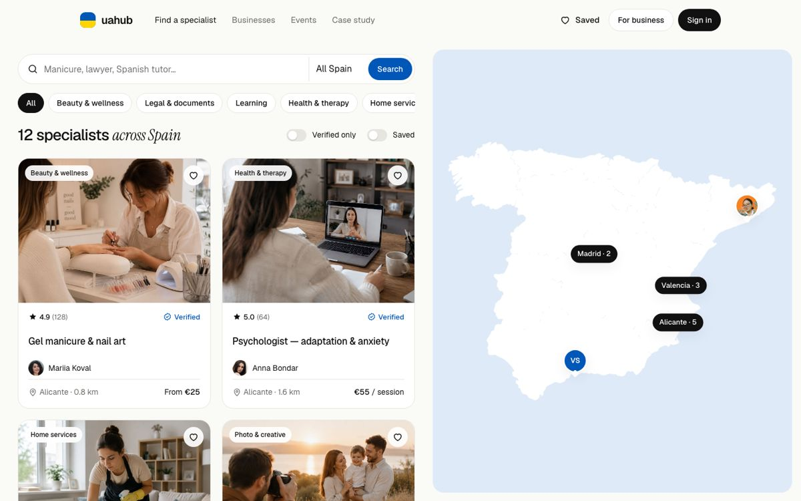

From a wall of content to one clear path.
UAHUB connects Ukrainians in Spain with specialists, businesses and events from their community. I redesigned the core flow — find, trust, book — and built it as a working prototype.

Who it's for, and what they really need
Since 2022 more than 200,000 Ukrainians have settled in Spain. The first months are the same for almost everyone: a TIE appointment, a school for the kids, a doctor, a place to get your nails done without translating every word.
People already find these specialists — through Telegram chats, word of mouth and screenshots of business cards. UAHUB's promise is to replace that chaos with one trusted place. So the product has to answer three questions, fast: Who can help me? Can I trust them? How do I book?
User goal
Find a trusted specialist nearby who speaks Ukrainian, and book without calling or chatting back and forth.
Business goal
Turn visits into bookings for listed businesses — that's what makes them stay and pay for featured placement.
What was in the way
I reviewed both the live site (uahub.world) and the first design iteration. Every problem below costs either attention or trust.


No main scenario
Map, events, businesses, promo, reviews, B2B — each block screams equally loud. Nothing tells you where to start.
Hero that says nothing
A dark globe has no link to Spain or to the task. A paid ad card in the first screen competes with the headline.
Choice overload
Eight equal categories with glowing 3D icons — low contrast, hard to scan, and every option looks the same.
Weak trust signals
Cards with long emoji-heavy text bury the things people check first: rating, verification, distance, price.
Fake progress
The booking stepper shows four steps but asks for everything at once — the steps don't actually guide you.
Flag on everything
Blue and yellow used at full strength on large surfaces read as a government portal, not a friendly service.
What I changed — and why


Before
Dark globe, three competing CTAs and an ad in the hero.
After
A light hero with one job: search. Faces of real specialists float around it with their role and city.
Why
The first screen should answer “is this for me?”. Seeing a lawyer in Valencia and a nail master in Alicante says it faster than any tagline — and people trust faces more than icons.
Before
One search field for “what”.
After
Two fields — what and where — plus popular queries as chips (Manicure, TIE renewal…).
Why
Services are local; without a city the results are useless. Popular chips help people who don't know the right word yet — and show what the platform is for.
Before
Eight equal categories with glowing 3D icons.
After
A bento grid: four main categories with photos and counts, plus one “See all” tile.
Why
Hick's law: fewer equal options means a faster decision. Different tile sizes create a visual hierarchy, and the counts (“1,240 specialists”) double as social proof.
Before
Cards with long descriptions, tags and emojis; key facts in random places.
After
One fixed card anatomy: photo → rating & Verified → service → person → distance & price.
Why
A list is for comparing. When every card has the same structure, the eye jumps between the same spots. “Verified” sits next to the rating because trust is the first question.
Before
The map lived on the home page as decoration, separate from results.
After
Catalog with a list and a live map side by side; hovering a card highlights its pin. On mobile — a “Show map” toggle.
Why
Seeing who's nearby is the core value — even the testimonial in the original design is about it. So the map became a tool for choosing, not a picture. Filters update both the list and the map, and the URL, so results can be shared in a Telegram chat.
Before
A modal with a four-step stepper and every field visible at once.
After
A side sheet with three real steps — service, time, details — a progress bar and a live summary with the price.
Why
One decision per screen lowers the cognitive load. You only see days that have free slots. The summary keeps the price visible all the time, and “pay on the spot, free cancellation” removes the fear of committing.
Before
Four event carousels and a promo banner.
After
One featured event with a date, a place, “312 people are going” and a single CTA.
Why
Carousels hide content: few people click past the first slide. One strong event with social proof gets more RSVPs than four weak ones.
Before
Blue and yellow on large surfaces; two fonts with small sizes.
After
A warm off-white base; blue only for actions, yellow only in the logo. Geist for UI, Instrument Serif italic for one accent word per heading.
Why
When colour means “click here”, people find the button without thinking. The serif accent adds warmth and a human voice, so a minimal interface doesn't feel cold.
A small system, built to grow
The same tokens live in Figma as variables and in the code as CSS custom properties — one source of truth for design and development.
How I'd know it works
Search → profile
Share of home visits that open a specialist profile.
Booking conversion
Profile views that end in a confirmed booking.
Time to book
From landing to confirmation. Target: under two minutes.
Map usage
Bookings that started from a map pin vs. the list.
Try the flow yourself.
Search, open the map, pick a specialist and book a time — it takes about a minute.